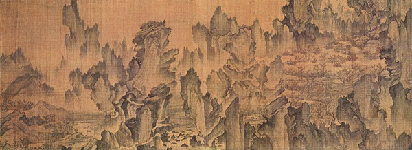
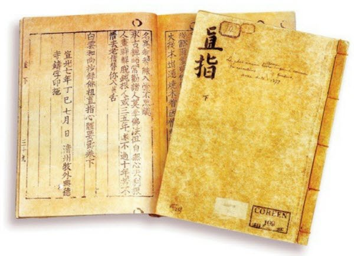
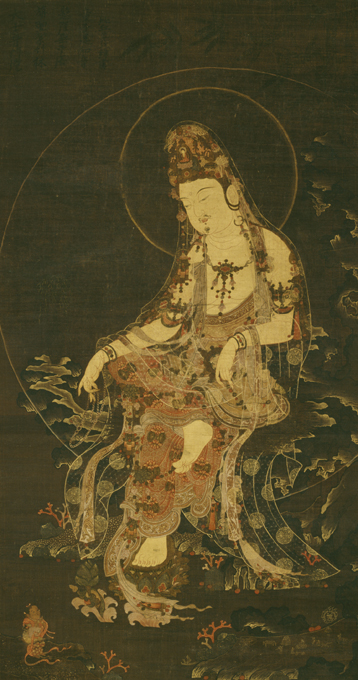
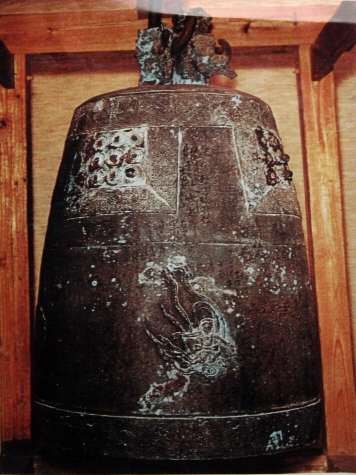
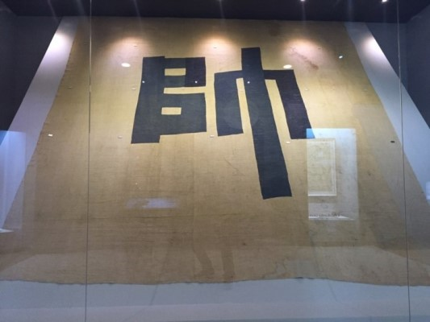
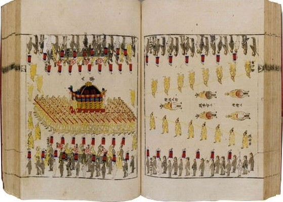
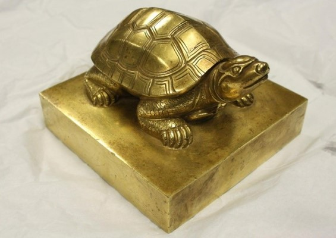

빼앗긴 문화재
I.
몽유도원도
(일본 소재)

<몽유도원도>는 조선시대 세종대왕의 셋째 아들인 안평대군의 꿈 이야기를 담은 그림입니다. 안평대군의 꿈 이야기를 들은 안견은 4일 만에 그림을 완성하여 공개하였다고 합니다. 안견은 당시 조선 최고의 화가였고 안평대군의 총애를 받았던 인물입니다. 조선을 넘어 동양 최고의 관념 산수화 로 인정받는 <몽유도원도>는 안평대군이 직접 쓴 제목과 꿈 내용이 기록되어 있고 김종서, 박팽년 등 당시 여러 학자들의 찬사 글과 시가 적혀있어 그 역사적 가치가 매우 큽니다. 세종대왕의 둘째 아들인 수양대군은 조카인 단종이 왕위에 오르자 왕위를 빼앗기 위해 계유정난 을 일으켰고, 그때 동생 안평대군과 관련된 서적이나 그림을 모두 없앴다고 전해지는데 이 몽유도원도는 어떤 이유에서인지 태워지지 않았다고 합니다.
어떻게 일본까지 가게 됐는지 정확한 경로는 알 수 없지만 임진왜란 이후 본 사람이 없다는 정황 으로 보아, 임진왜란 때 국내에서 빠져나갔다는 설이 가장 유력합니다. 이렇게 문화적, 역사적 가치가 우수한 몽유도원도는 현재 일본의 ‘덴리 대학’에서 보관되고 있으며 우리나라에서는 대여 형식으로 세 차례만 전시되었다가 그 뒤로는 대여조차 되지 않고 있습니다.
- 관련 영상
II.
직지심체요절
(프랑스 소재)

정식 이름은 <백운화상초록불조직지심체요절(白雲和尙抄錄佛祖直指心體要節)>로, 줄여서 <직지심체요절> 또는 <직지>라고 부릅니다. <직지>는 1377년(고려 우왕 3년) 청주 흥덕사라고 하는 절에서 발간한 책으로, 금속활자 로 인쇄된 세계 최초의 책입니다. <직지>의 발견으로 인쇄 역사는 새롭게 쓰이게 되었습니다. 이전까지만 해도 금속활자는 서양에서 발명된 것으로 알려져 왔는데, <직지>가 알려지면서 우리나라의 금속활자 기술이 훨씬 더 앞섰다는 것을 확인할 수 있었습니다.
최초의 주한 프랑스 공사 였던 ‘콜레 드 플랑시’는 우리나라 문화재에 관심이 많아 수많은 도자기와 책을 수집하였습니다. 한국에서 수집한 문화재를 가지고 프랑스로 돌아간 플랑시는 골동품 을 모으는 ‘앙리 베베르’라는 사람에게 팔았고, 직지를 포함한 문화재들은 베베르의 유언에 따라 프랑스 국립도서관에 기증되어 1950년부터 프랑스 국립도서관에 보관되어 있습니다.
1972년 당시 금속활자로 인쇄된 세계 최초의 책은 1455년에 만들어진 구텐베르크의 인쇄물로 알려져 있었으나, 박병선 박사의 노력으로 <직지>가 구텐베르크의 인쇄물보다 78년이나 앞선다는 사실이 알려지게 되었습니다.
- 관련 영상
III.
수월관음도
(독일, 일본, 미국, 이탈리아 등 소재)

“세계 최고의 예술품인 모나리자와 견줄만하다“며 뉴욕타임즈가 인정한 수월관음도는 고려 불화 중에서도 백미(白眉)로 꼽힙니다. 수월관음도(水月觀音圖)는 대부분 13세기 말에서 14세기에 제작되었으며 비단 바탕에 일괄적인 형식으로 묘사되었습니다. 수월관음도는 글자의 뜻 그대로 달이 비친 바다 가운데 금강보석(金剛寶石)에 앉아있는 관음보살을 그린 그림입니다. 붉은색, 녹색, 청색, 흰색, 황색(금색) 오직 다섯 가지 색 만으로 표현한 이 그림은 현대 기술로도 재현하기 어려울 정도로 정교함을 자랑합니다. 여러 번 채색하면서도 전혀 뭉개지거나 어그러진 부분을 찾아볼 수 없는 것은 아주 세밀한 터치로 수만 번 붓질 했기 때문입니다. 불도를 걸어가듯, 마음을 수양하듯, 부처에 닿으려는 신실한 신앙을 통해 수월관음도의 진정한 미를 엿볼 수 있습니다.
고려 불화가 점차 발굴되어 현재까지 전 세계적으로 160여 점 정도가 있는 것으로 알려졌습니다. 언제 어떻게 해외로 반출되었는지 명확히 알려진 바가 없지만 소재가 알려진 40여 점 정도는 일본, 미국 등의 박물관에 있는 것으로 알려져있습니다. 우리나라는 리움미술관에 2점, 아모레퍼시픽미술관과 우학문화재단, 호림박물관, 국립중앙박물관이 각각 1점씩 총 6점을 보유하고 있습니다.
- 관련 영상
IV.
연지사동종
(일본 소재)

통일신라 때 주조된 연지사 종은 성덕대왕신종, 상원사 종과 더불어 통일신라시대의 3대 범종으로 손꼽히는 문화재입니다. 임진왜란 때 일본군에 약탈된 뒤 지금까지 일본 후쿠이현 쓰루가시 조구신사에서 보관하고 있습니다. 일본은 연지사 종의 문화재적 가치를 높이사 국보로 지정한 상황입니다.
2009년 진주에서 '연지사종 환수위원회'가 설립되어 일본에 반환 요구서를 제출하였으나 일본은 반환 거부에 더해 관람 중지 선언을 한 상태입니다.
- 관련 영상
되찾은 문화재
I.
북관대첩비
(2005년 반환)
함경북도 북평사 직을 맡고 있던 정문부(鄭文孚) 장군이 임진왜란 당시 의병을 모아 가토 기요마사(加藤淸正)가 이끄는 왜군을 무찌른 전투를 소상히 기록한 전승비입니다. 1707년(숙종 34) 숙종의 명으로 함경북도 길주군 임명면(현 김책시 임명동)에 세웠습니다. 이후 1905년 러일 전쟁 당시 일본군 제2사단 17여단장 이케다 마시스케(池田正介) 소장이 일본으로 가져갔고, 그 후 반환될 때까지 야스쿠니 신사에서 보관되었습니다.
1978년, 최서면 국제한국연구원장이 우연하게 야스쿠니 신사에서 북관대첩비를 발견하였고 2005년, 한일 불교복지협의회가 베이징에서 북한의 조선불교도연맹과 만나 최종적으로 북관대첩비를 북조선에 반환하기로 합의했습니다. 2005년, 한국으로 반환된 후 2006년, 환송 협의를 거쳐 원래 자리였던 북한에 다시 세워지게 되었습니다.
- 관련 영상
II.
어재연장군 수자기
(2007년 임대 형식 반환)

‘수자기’는 1871년 신미양요 때 왕명으로 광성보를 지키던 어재연 장군의 대장기입니다. 구한말 배경의 인기드라마였던 '미스터션샤인'에서도 등장했습니다. 신미양요에서 미국의 막강한 군사력을 이겨내지 못하고 끝내 광성보가 함락되었지만, 어재연 장군을 비롯한 350여 명의 조선군이 모두 전사하는 치열하고 끈질긴 저항에 미군은 전사 3명, 부상자 10명이라는 압도적인 승리를 하고도 결국 물러나게 되었습니다. 전투를 끝내고, 미군은 어재연 장군의 대장기였던 수자기를 전리품으로 가지고 갔습니다.
미국 애나폴리스 해군 사관 학교 박물관에 소장되어 있던 수자기에 대해 영구 반환을 추진했으나 미국 해군사관학교 측이 관련 법령이나 절차상의 사유로 불가하다는 입장을 고수하자 우선 장기 대여 형식으로 2007년, 136년 만에 우리나라로 돌아와 현재 국립 고궁 박물관에 있습니다.
- 관련 영상
III.
조선왕실의궤
(2011년 임대 형식 반환)

조선시대에 왕실이나 국가의 주요 행사내용을 정리한 기록으로 결혼ㆍ잔치ㆍ장례 때 입은 왕의 옷과 행렬의 배치를 그림을 통해 상세하게 기록한 문서로 역사적으로 귀중한 가치를 지닙니다. 특히 행사의 진행과정을 날짜순으로 자세히 적고, 참여한 사람들의 명단과 비용 및 재료까지 세밀히 기록해 놓았으며, 의식에 쓰인 주요 도구와 행사 장면을 천연색으로 그려 놓아 시각적 효과와 현장성까지 살려 놓은 것이 큰 특징입니다.
1866년 병인양요 때 강화도에 침략한 프랑스군이 약탈해간 외규장각 도서 중 하나입니다. 또, 일본에서도 조선총독부가 일본 왕실에 기증하는 형식으로 일본에 유출되었습니다. 이후 2006년, 조선왕실의궤 환수위원회가 발족되면서 2011년, 일본에 약탈됐던 ＜조선왕실의궤＞의 일부가 국내로 반환되었고 2011년 프랑스 국립도서관에 있던 ＜조선왕실의궤>가 5년 단위 임대형식으로 반환되었습니다.
- 관련 영상
IV.
문정왕후어보
(2017년 반환)

본래 어보의 목적은 왕실의 혼례나 세자 책봉 등의 궁중의식에서 시호·존호·휘호 등을 올릴 때 함께 제작된 의례용 도장입니다. 문정왕후어보는 1547년 조선 제13대 왕 명종(明宗)이 어머니 문정왕후(文定王后)에게 ‘성열대왕대비(聖烈大王大妃)’라는 존호를 바치고 이를 기념하기 위해 만든 도장으로 조선 왕실의 권위와 정통성을 상징하는 도장입니다. 어보의 보뉴(손잡이 부분)은 거북 모양이며, 작고 뾰족한 머리부터 몸의 비늘까지 매우 정교하게 조각되어 있습니다.
문정왕후 사후 종묘에 보관 중이던 문정왕후 어보는 한국전쟁 당시 분실한 것으로 추정된다. 당시 주미한국대사가 어보 수십 점을 도난당해 반환을 요구했다는 기록이 남아있는데, 그 중 하나가 문정왕후 어보인 것으로 추정됩니다. 이후 2007년, 국립문화재연구소에서 미국 LA카운티미술관에 문정왕후 어보가 소장되어 있다는 사실을 알게 되었고 미국과 공조하여 2017년에 한국으로 반환되었습니다.
- 관련 영상